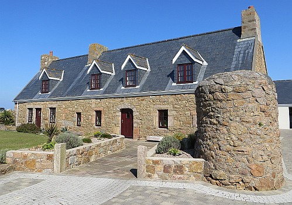

Le Ménage ès Feuvres,
St. Ouën.
Lé 3 d'septembre, 1966.
Moussieu l'Rédacteu,
"Ch'tait dans chutte maison ichin qu'tu vis l'jour la preunmié fais," Papa m'dit eune séthée quand j'tais mousse à La Forge ès Landes à St. Ouën. "Mais ch'n'est pon la maison d'nouos anchêtres, chette-chîn. N'y'a pon bein d's années qu'oulle est bâtie et qué j'mé mint à forgi sus man compte.
"Ch'tait dans la niet d'mardi, lé 29 d'septembre, 1891, qué tu fus né, et par la f'nêtre dé la chambre à ta m'mèe nou viyait la lueu du feu tchi brûlit l'tas d'fain au Sieur Vibert, tchi d'meuthait à côté du Clios d'Jacques. Ta grand' tante Lîsabé gardait maison pour li.
"À ch't êpoque-là ch'tait Moussieu Èrtu L'Chèr tchi 'tait Connêtabl'ye d'St. Ouën. Moussieu John Pépin 'tait Recteur. Ch'tait li tchi t'bâptîsit lé 11 d'octobre, 1891, dans l'églyise dé St. George. Moussieu George Orange Balleine 'tait Douoyain d'l'Île. Messire George Clement Bertram 'tait Bailli, et l'Général C. B. Ewart 'tait Lieut'nant-Gouvèrneux.

"La maîson d'nouos anchêtres, où-est qu'tan grand-oncl'ye Charles et ta grand'tante Jane démeuthent à ch't heu, est L'Mènage ès Feuvres au but d'La Rue d'La D'vise. T'n oncl'ye Charles est vièr garçon et d'meuthe tout seu dans un but d'la maîson, et ta tante Jane, tch'est vielle fille, démeuthe toute seule dé l'aut' but et garde êcole pour les p'tits êfants pour gangni sa vie.
"Y'a bein d's années, même dévant qué j'fûsse né en 1836," Papa continnuit. "Nouos anchêtres avaient souoxante vrégies d'tèrre auve lé mènage - tch'a 'té dans nouot' fanmile trais chents ans. Dans man janne temps j'ai ouï l's anciens d'chu temps-là dithe qué la maîson a quat' chents ans, mais jé n'pouorrais pon l'affirmer souos sèrment! Quand tu s'sas grand et qu'tu éthas finni l'êcole, tu pouorras p't êt' aller vaie dans les livres d'La Cour Rouoyale si ch'est vrai. Ch'est seux qu'les mêssieux d'la Cour té lais'sont r'garder dans les r'gistres si tu es un homme sobre et dingne.
"Aujourd'aniet," Papa m'dît, "la seule tèrre tchi nouos rest dé ches souoxante vrégies-là est la vrégie dans tchi la maîson du mènage est située, et l'clios d'Jacques tch'a un p'tit pus qu'trais vrégies."
"Bon!" j'lî dis, "tch'est tch'est dév'nu d'toutes les aut' vrégies?"
"Eh bein, man garçon," i' m'dit, "touos les Clios du Ménage, sénon l'Clios d'Jacques, fûdrent vendus pas nouos anchêtres dans l'couothant d's années, à ch'tch'i' pathaît, iun à la fais. J'ai ouï les noms des clios quand j'tais janne, mais jé l's ai oublyiyés. J'sai bein qué l'Clios d'Rabot et L's Aînèthes en n'taient. Dans la cârre du gardîn en d'vant du mènage y'a eune bèrgéthie, où-est qu'nouos anchêtres tondaient les brébis. Y'en avait un tas en Jèrri dans les vièrs temps, des brébis, et y'a un vièr portrait du Châté d'Gros Nez tch'en montre ieune assise auprès du châté. J'crai qu'nou peut dithe, sans dêmenti, qu'chutte bèrgéthie-là est la seule tchi reste en Jèrri. Malheutheusement, ou fait partie du but du clios du côté sud du mènage, ou ou' n'nouos appartcheint pus.
"Si t'n oncl'ye Charles vit pus longtemps qu'mé, l'mènage veindra à tan p'pèe - dépis tch'il est l'grand d'mes garçons - ch'est en tchi tu pouorrais l'héthiter un jour té-mème, état l'grand des garçons d'tan p'pèe. Si janmais ch'la s'arrive, j'voudrais qu't'êprouv'thais, si l'Bouan Dgieu t'donnes la prospéthité, à r'acater la bèrgéthie et autant des tèrres du mènage comme tu pouorras. Y'a un vièr diton tchi nouos dit, 'Chent ans porter bannièthe, chent ans bouler chûvièthe!' Nou peut dithe qué nouos anchêtres, propriêtaithes d'un mènage dé souoxantes vrégies, portaient bannièthe, et qu'à ch't heu j'boulons chûvièthe! Si l'Bouan Dgieu t'prêserve et t'donnes bouanne santé et bouanne appétit, et qu'tu t'comportes comme i' faut, tu pouorras p't êt' êprouver à r'porter la bannièthe pour la fanmile!
"La maîson d'l'aut' côté d'la route du mènage, appelée 'North West', fut bâtie où-est qu'les vielles offices du mènage soulaient être dans les vièrs temps. Iun des prenmièrs tch'y d'meuthit, dans chutte maîson-là, 'tait Maît' John A'court, pèthe du Cap'taine John A'court d'à ch't heu, et l'clios dans tchi qu'oulle est bâtie soulait êt' iun des clios du mènage."
"Mais, Papa," j'lî dis, "pour tch'est tch'i' vendîdrent touos ches clios-là, nouos anchêtres?"
"Eh bein, man garçon," i' m'dît, "jé n'pouorrais pon t'en dithe un bouan français, mais tan grand-grand-pèthe Jean Thomas m'dîsait dans san vivant qué l's anchêtres avaient 'té parmi les cheins tchi faîsaient l'conmèrce d'la fraude ichîn l'tou d'nouos côtes, et qu'les sou v'naient pus vite dé mème qu'à travailli la tèrre. Et pis, i' prannaient goût à la litcheu tchi 'tait la grand' partie d'chu mauvais conmèrce-là. V'la tch'allait bein pour eune volée, mais y'avait tréjous certaines êpoques dans tchi qu'les fraudeurs 'taient oblyigis d'arrêter. J'pense bein tch'il' 'taient dêcouvèrts par la police de temps en temps. Quand ch'la s'arrivait, les sou mantchaient et l's anchêtres, ayant pèrdu l'habitude du travas, vendaient un clios pour aver des sou pour prandre souain d'lus bésouains jusqu'à qué l'conmèrce èrquémenchîsse!"
George d'La Forge
Viyiz étout: